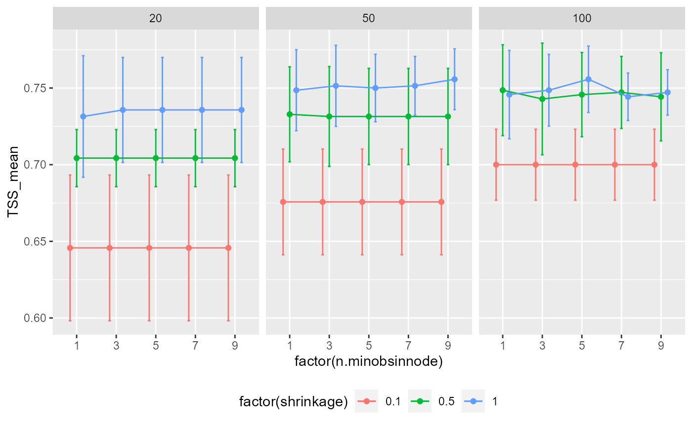

tune_gbm.RdFit and validate Generalized Boosted Regression models with exploration of hyper-parameters
tune_gbm( data, response, predictors, predictors_f = NULL, fit_formula = NULL, partition, grid = NULL, thr = NULL, metric = "TSS" )
| data | data.frame. Database with response (0,1) and predictors values. |
|---|---|
| response | character. Column name with species absence-presence data (0,1). |
| predictors | character. Vector with the column names of quantitative predictor variables (i.e. continuous variables). Usage predictors = c("aet", "cwd", "tmin") |
| predictors_f | character. Vector with the column names of qualitative predictor variables (i.e. ordinal or nominal variables type). Usage predictors_f = c("landform") |
| fit_formula | formula. A formula object with response and predictor variables (e.g. formula(pr_ab ~ aet + ppt_jja + pH + awc + depth + landform)). Note that the variables used here must be consistent with those used in response, predictors, and predictors_f arguments. Default is NULL. |
| partition | character. Column name with training and validation partition groups. |
| grid | data.frame. Provide a data frame object with algorithm hyper-parameters values to be tested. It Is recommended to generate this data.frame with grid() function. Hyper-parameters needed for tuning are 'n.trees', 'shrinkage', and 'n.minobsinnode'. |
| thr | character. Threshold used to get binary suitability values (i.e. 0,1). It is useful for threshold-dependent performance metrics. It is possible to use more than one threshold type. It is necessary to provide a vector for this argument. The next threshold area available:
In the case of use more than one threshold type it is necessary concatenate threshold types, e.g., thr=c('lpt', 'max_sens_spec', 'max_jaccard'), or thr=c('lpt', 'max_sens_spec', 'sensitivity', sens='0.8'), or thr=c('lpt', 'max_sens_spec', 'sensitivity'). Function will use all thresholds if no threshold is specified |
| metric | character. Performance metric used for selecting the best combination of hyper-parameter values. Can be used one of the next metrics SORENSEN, JACCARD, FPB, TSS, KAPPA, AUC, and BOYCE. TSS is used as default. |
A list object with:
model: A "gbm" class object. This object can be used for predicting.
predictors: A tibble with quantitative (c column names) and qualitative (f column names) variables use for modeling.
performance: Hyper-parameters values and performance metric (see sdm_eval) for the best hyper-parameters combination.
hyper_performance: Performance metric (see sdm_eval) for each combination of the hyper-parameters.
data_ens: Predicted suitability for each test partition based on the best model. This database is used in fit_ensemble
#> # A tibble: 1,400 x 13 #> id pr_ab x y aet cwd tmin ppt_djf ppt_jja pH awc #> <int> <dbl> <dbl> <dbl> <dbl> <dbl> <dbl> <dbl> <dbl> <dbl> <dbl> #> 1 715 0 -95417. 314240. 323. 546. 1.24 62.7 17.8 5.77 0.108 #> 2 5680 0 98987. -159415. 448. 815. 9.43 130. 6.43 5.60 0.160 #> 3 7907 0 121474. -99463. 182. 271. -4.95 151. 11.2 0 0 #> 4 1850 0 -39976. -17456. 372. 946. 8.78 116. 2.70 6.41 0.0972 #> 5 1702 0 111372. -91404. 209. 399. -4.03 165. 9.27 0 0 #> 6 10036 0 -255715. 392229. 308. 535. 4.66 166. 16.5 5.70 0.0777 #> 7 12384 0 -311765. 380213. 568. 352. 4.38 480. 41.2 5.80 0.110 #> 8 6513 0 111360. -120229. 327. 633. 4.93 163. 8.91 1.18 0.0116 #> 9 9884 0 -284326. 442136. 377. 446. 3.99 296. 16.8 5.96 0.0900 #> 10 8651 0 137640. -110538. 215. 265. -4.62 180. 9.57 0 0 #> # ... with 1,390 more rows, and 2 more variables: depth <dbl>, landform <fct># We will partition the data with the k-fold method abies2 <- part_random( data = abies, pr_ab = "pr_ab", method = c(method = "kfold", folds = 5) ) # pr_ab columns is species presence and absences (i.e. the response variable) # from aet to landform are the predictors variables (landform is a qualitative variable) # Hyper-parameter values for tuning tune_grid <- expand.grid( n.trees = c(20, 50, 100), shrinkage = c(0.1, 0.5, 1), n.minobsinnode = c(1, 3, 5, 7, 9) ) gbm_t <- tune_gbm( data = abies2, response = "pr_ab", predictors = c( "aet", "cwd", "tmin", "ppt_djf", "ppt_jja", "ppt_jja", "pH", "awc", "depth" ), predictors_f = c("landform"), partition = ".part", grid = tune_grid, thr = "max_sens_spec", metric = "TSS" )#> #>#>#>#>#>#>#>#> #>#>#>#>#>#>#># Outputs gbm_t$model#> gbm::gbm(formula = formula1, distribution = "bernoulli", data = data, #> n.trees = best_hyperp$n.trees, interaction.depth = 1, n.minobsinnode = best_hyperp$n.minobsinnode, #> shrinkage = best_hyperp$shrinkage) #> A gradient boosted model with bernoulli loss function. #> 50 iterations were performed. #> There were 9 predictors of which 9 had non-zero influence.gbm_t$predictors#> # A tibble: 1 x 10 #> c1 c2 c3 c4 c5 c6 c7 c8 c9 f #> <chr> <chr> <chr> <chr> <chr> <chr> <chr> <chr> <chr> <chr> #> 1 aet cwd tmin ppt_djf ppt_jja ppt_jja pH awc depth landformgbm_t$performance#> # A tibble: 1 x 28 #> n.trees shrinkage n.minobsinnode model threshold thr_value n_presences #> <dbl> <dbl> <dbl> <chr> <chr> <dbl> <int> #> 1 50 1 9 gbm max_sens_spec 0.458 700 #> # ... with 21 more variables: n_absences <int>, TPR_mean <dbl>, TPR_sd <dbl>, #> # TNR_mean <dbl>, TNR_sd <dbl>, SORENSEN_mean <dbl>, SORENSEN_sd <dbl>, #> # JACCARD_mean <dbl>, JACCARD_sd <dbl>, FPB_mean <dbl>, FPB_sd <dbl>, #> # OR_mean <dbl>, OR_sd <dbl>, TSS_mean <dbl>, TSS_sd <dbl>, AUC_mean <dbl>, #> # AUC_sd <dbl>, BOYCE_mean <dbl>, BOYCE_sd <dbl>, IMAE_mean <dbl>, #> # IMAE_sd <dbl>gbm_t$data_ens#> # A tibble: 1,400 x 5 #> rnames replicates part pr_ab pred #> <chr> <chr> <chr> <dbl> <dbl> #> 1 1 .part 1 0 0.00569 #> 2 2 .part 1 0 0.104 #> 3 3 .part 1 0 0.125 #> 4 4 .part 1 0 0.00853 #> 5 5 .part 1 0 0.0257 #> 6 6 .part 1 0 0.00263 #> 7 7 .part 1 0 0.00760 #> 8 8 .part 1 0 0.0383 #> 9 9 .part 1 0 0.187 #> 10 10 .part 1 0 0.177 #> # ... with 1,390 more rowsgbm_t$hyper_performance#> # A tibble: 45 x 25 #> n.trees shrinkage n.minobsinnode model threshold TPR_mean TPR_sd TNR_mean #> <dbl> <dbl> <dbl> <chr> <chr> <dbl> <dbl> <dbl> #> 1 20 0.1 1 gbm max_sens_spec 0.906 0.0185 0.74 #> 2 20 0.1 3 gbm max_sens_spec 0.906 0.0185 0.74 #> 3 20 0.1 5 gbm max_sens_spec 0.906 0.0185 0.74 #> 4 20 0.1 7 gbm max_sens_spec 0.906 0.0185 0.74 #> 5 20 0.1 9 gbm max_sens_spec 0.906 0.0185 0.74 #> 6 20 0.5 1 gbm max_sens_spec 0.88 0.0305 0.824 #> 7 20 0.5 3 gbm max_sens_spec 0.88 0.0305 0.824 #> 8 20 0.5 5 gbm max_sens_spec 0.88 0.0305 0.824 #> 9 20 0.5 7 gbm max_sens_spec 0.88 0.0305 0.824 #> 10 20 0.5 9 gbm max_sens_spec 0.88 0.0305 0.824 #> # ... with 35 more rows, and 17 more variables: TNR_sd <dbl>, #> # SORENSEN_mean <dbl>, SORENSEN_sd <dbl>, JACCARD_mean <dbl>, #> # JACCARD_sd <dbl>, FPB_mean <dbl>, FPB_sd <dbl>, OR_mean <dbl>, OR_sd <dbl>, #> # TSS_mean <dbl>, TSS_sd <dbl>, AUC_mean <dbl>, AUC_sd <dbl>, #> # BOYCE_mean <dbl>, BOYCE_sd <dbl>, IMAE_mean <dbl>, IMAE_sd <dbl># Graphical exploration of performance of each hyper-parameter setting require(ggplot2) pg <- position_dodge(width = 0.5) ggplot(gbm_t$hyper_performance, aes(factor(n.minobsinnode), TSS_mean, col = factor(shrinkage) )) + geom_errorbar(aes(ymin = TSS_mean - TSS_sd, ymax = TSS_mean + TSS_sd), width = 0.2, position = pg ) + geom_point(position = pg) + geom_line( data = gbm_t$tune_performance, aes(as.numeric(factor(n.minobsinnode)), TSS_mean, col = factor(shrinkage) ), position = pg ) + facet_wrap(. ~ n.trees) + theme(legend.position = "bottom")# }